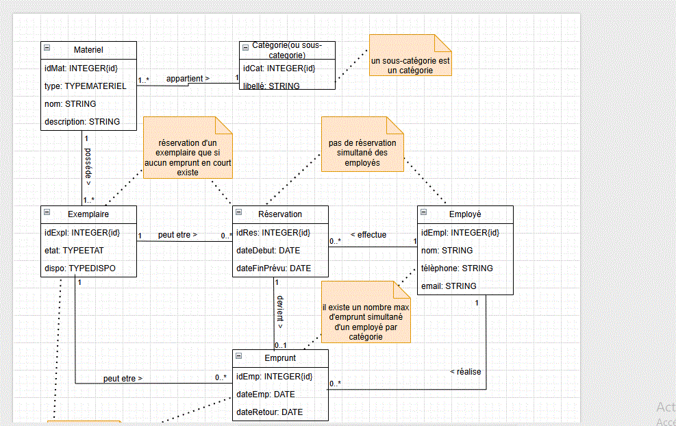

Mes Projets
Voici quelques projets que j'ai réalisés:
Programmation d'un interpreteur
Programmation d'un interpréteur d'expressions arithmétiques, technologie utilisée : le C.
En cours

Programmation d'un jeu -les tours de hanoi
Développement d'un jeu de réflexion cohérent à déplacer des disques de différents diamètres, technologie utilisée : Python.
Voir le Code
Création d'un site web
Création d'une application web interactive en javascript avec une interface utilisateur responsive en HTML/CSS.
🛠️ Projet de gestion de prêts de matériel (UML)
Dans ce projet, nous avons conçu un modèle de base de données pour gérer les prêts de matériels dans un comité d’entreprise.